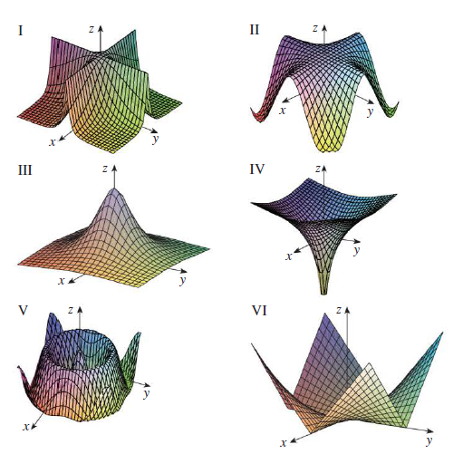

Match the function with its graph (labeled I–VI). Give reasons for
your choices.
(a) \(f(x, y) = \frac{1}{1 + x^2 +
y^2}\)
(b) \(f(x, y) = \frac{1}{1 +
x^2y^2}\)
(c) \(f(x, y) = \ln(x^2 + y^2)\)
(d) \(f(x, y) = \cos\sqrt{x^2 +
y^2}\)
(e) \(f(x, y) = |xy|\)
(f) \(f(x, y) = \cos(xy)\)
